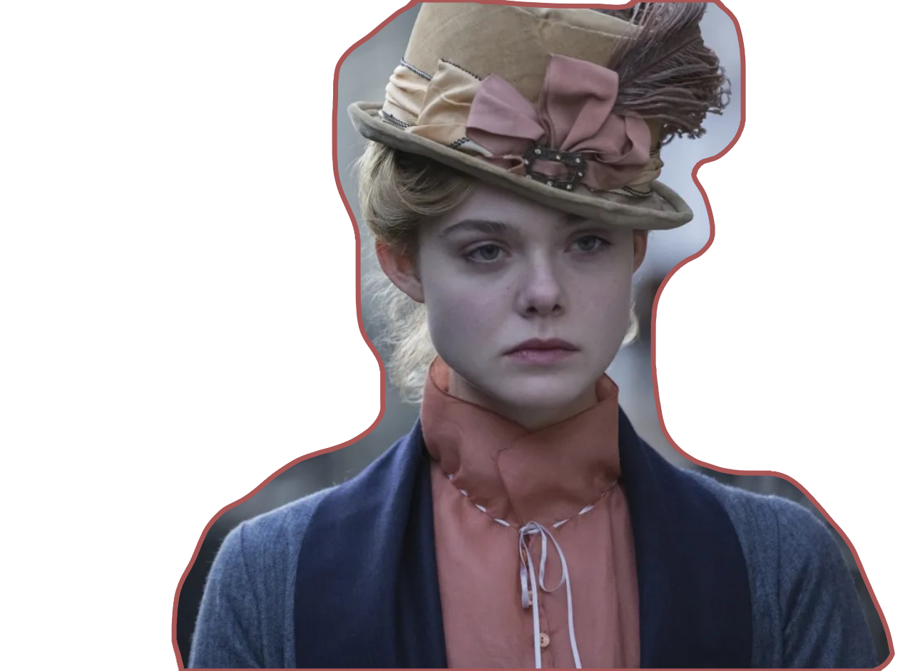

영화 / MOVIE-LIST
01.메리 셸리:프랑켄슈타인의 탄생
TO FIND MY OWN VOICE
이마에는 수 많은 바느질 자국과 커다란 나사를 목을 관통한 이 괴물은 누구일까요?
프랑켄슈타인은 이 캐릭터의 이름이 아닌, 한 여성의 인생이 담긴 소설책 제목입니다.

정치철학자인 아버지와 여권운동가의 어미니의 딸. 영국의 소설가인 메리셸리
입니다
이 소설은 피를 끓게하고 심장을 뛰게하는 SPARK 가 느껴지는 글을 쓰고 싶어하던
15살의 메리이야기에서 시작됩니다.
[ Chapt. 1 사랑은 무한한 존재 ]
이 소녀의 이름은 메리셸리.
돌아가신 어머니의 묘지에 앉아 글을 쓰거나 아버지의 서점일을 도우며 하루를 보냅니다
그녀의 아버지 고드윈은 딸의 작가활동을 적극적으로 응원해주는 든든한 존재였습니다.
새어머니의 관계가 좋지 않았던 메리는 아버지의 권유로 잠시 스코트랜드에 머물게됩니다.
우연히 시낭송회에서 퍼시셸리를 만나 서로 한눈에 반하게 됩니다.
퍼시셸리는 신은 어디에나 있다지만 신전을 세우는 이유는 도덕의 수단일뿐 실제로는 존재하지않다고 말합니다.
그리고 메리는 하찮은 런던생활을 잊고 자유를 찾아 떠나길 갈망하죠.
고요한 정적에서 벗어나 변화를 맞기를 원하는 공통된 마음이 서로의 마음을 더욱 가깝게 만듭니다.
진정으로 살 만한 가치가 있는 삶을 위해 메리의 의붓동생 클레어와 함께 세사람은 집을 떠납니다
[ Chapt. 2 사랑과 나태함으로만 하루가 간다 ]
사랑하는 연인과 함께 집을 떠나왔지만, 반복되는 행복한 일상과 그 사이에서 나태해져가는 본인의
모습을 발견하게 됩니다.
글을 써야한다는 스스로의 목표를 지키지않아 죄책감에 힘들어 하기도 합니다.
자유분방한 셸리의 모습에 결혼을 결심했지만, 관습을 탈피하는 삶을 추구한다며 본인의 친구에게
마음을 주지않은 메리에게 한 사람만의 사랑하는 자유를 믿는 빈약한 존재라는 소리를 하며 메리에게 큰 실망을 줍니다.
메리는 오직 셸리만 있으면 어느 공간에도 행복을 느꼈던 사람이였는데 말이죠
글을 써야한다는 스스로의 목표를 지키지않아 죄책감에 힘들어 하기도 합니다.
자유분방한 셸리의 모습에 결혼을 결심했지만, 관습을 탈피하는 삶을 추구한다며 본인의 친구에게
마음을 주지않은 메리에게 한 사람만의 사랑하는 자유를 믿는 빈약한 존재라는 소리를 하며 메리에게 큰 실망을 줍니다.
메리는 오직 셸리만 있으면 어느 공간에도 행복을 느꼈던 사람이였는데 말이죠